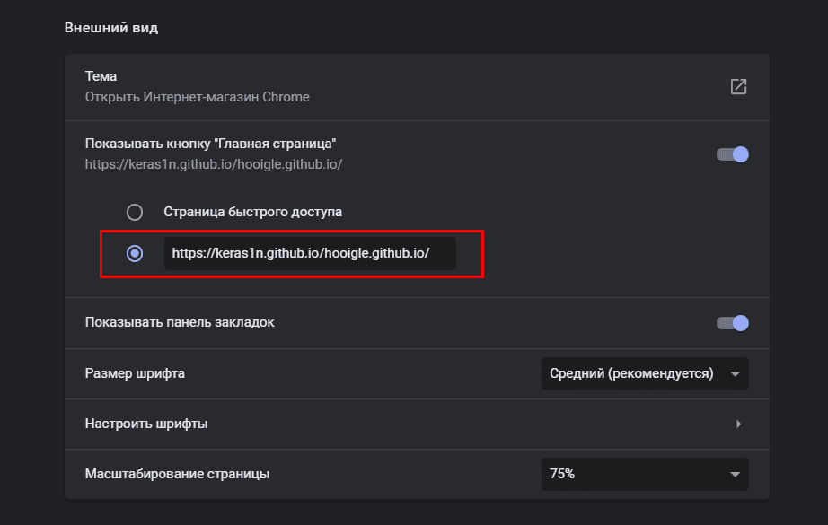
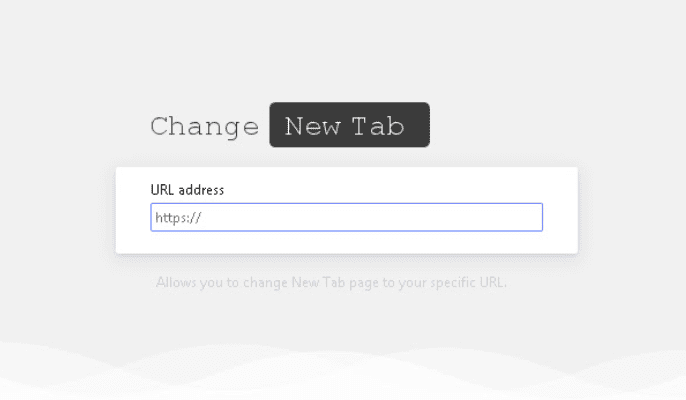

Вы можете установить HOOGLE как домашнюю страницу, так и страницу которая будет открыватся при нажатии на создание новой вкладки.
Для установки на домашнюю страницу (при запуске браузера), вам необходимо просто изменить ссылку в настройках браузера.
Для этого вам нужен только 1 шаг, это вставить ссылку в окошко с главной страницей, в настройках вашего браузера.
По скольки в настройках браузера изначально нет такой возможности как поменять новую вкладку на свою, вам необходимо скачать небольшое расширение для: google chrome, mozilla firefox.
Теперь просто снова вставьте в окно сслыочку, ничего сложного. На всякий случай --->
Вот и всё! Напоминаю что на данный момент идёт разработка новых фич, кастомизации почти всей страницы, и многое другие. Так как это бетка, то что-то может некорректно работать.